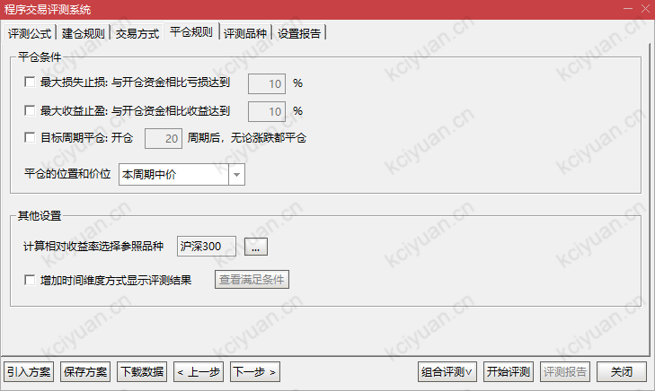
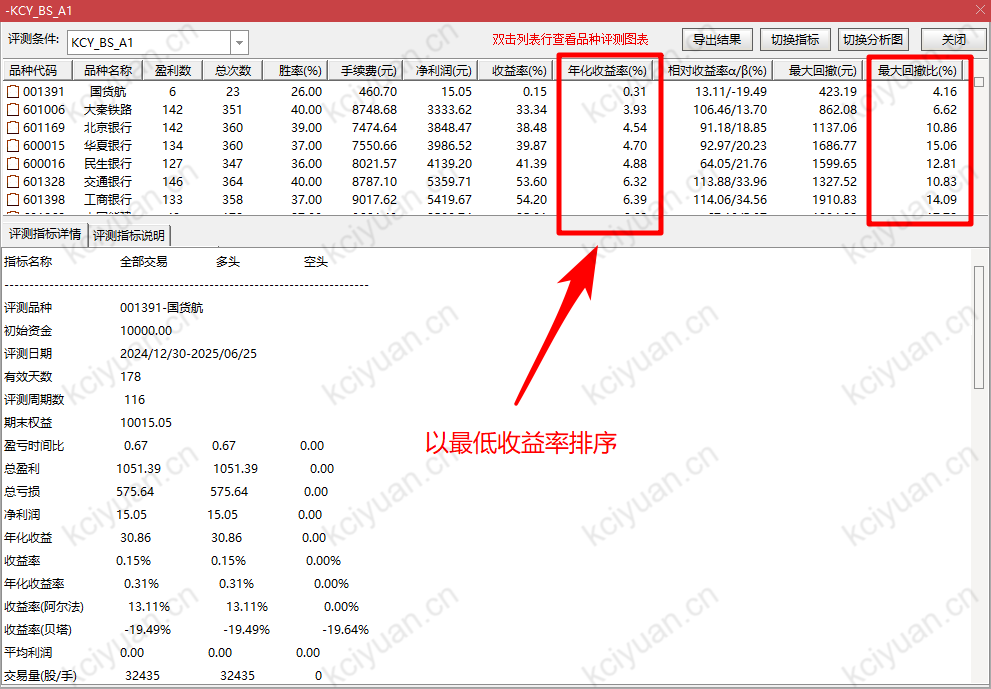
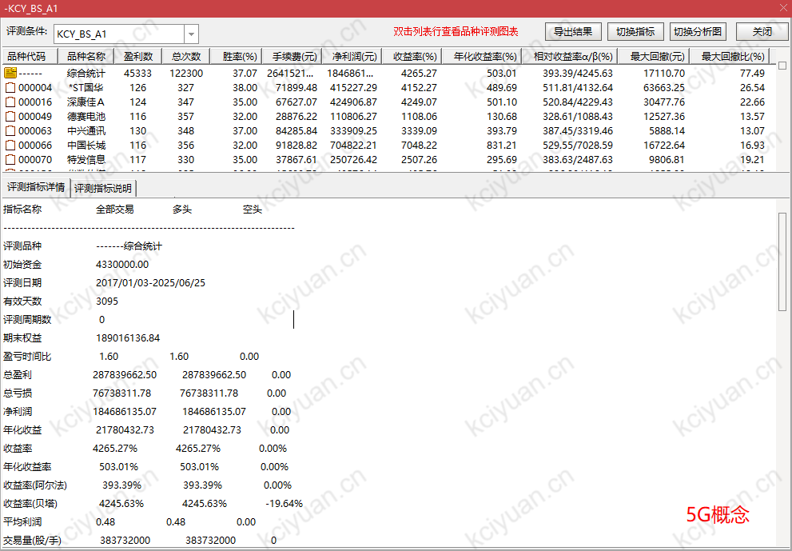
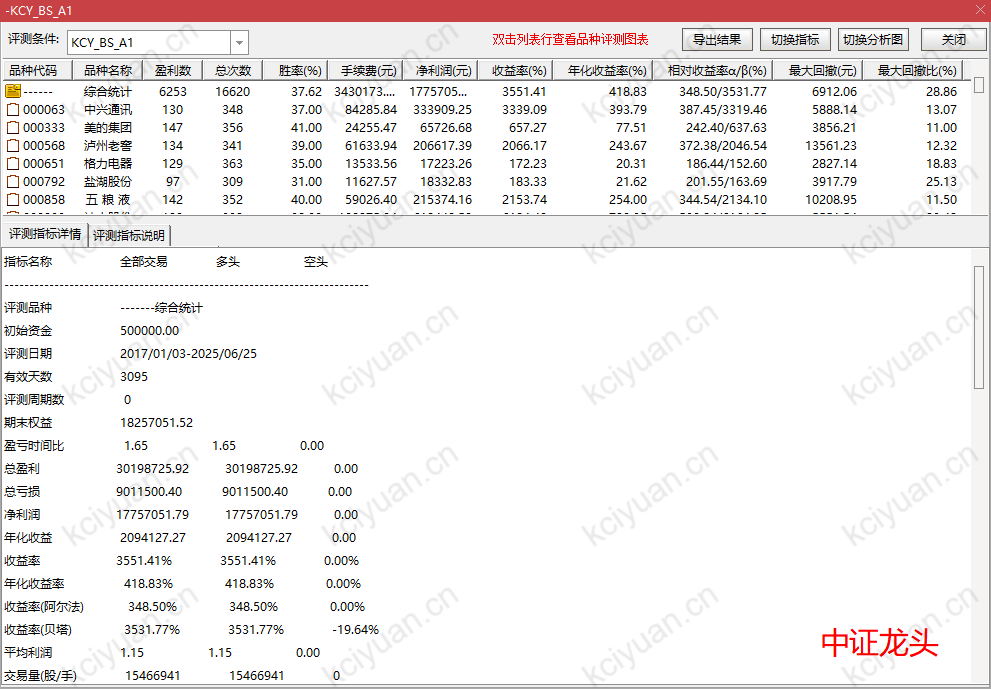

在开始10分钟的认真阅读之前，我想先做一个自述。
我不是什么“股神”，我是一个程序员，一个和你一样，曾在交易的黑暗森林里独自摸索了十年的人。
我到过山顶，也坠入过深渊，我走了所有你能想象的弯路，读过一堆书，付费踩过一堆坑，写代码测试了无数的策略……
这是一段痛苦但极其宝贵的经历，它诉说着 普通人想在市场赚钱，唯一的出路，不是预测，而是规则。
这套系统，就是我长期在最残酷的高杠杆日内交易中生存下来的、唯一有效的交易逻辑，锻造的一套 「盈利武器」。
放到股市在最严苛的回测条件下，它于「沪深300」近十年的惊涛骇浪中，不仅活了下来，还创造了 158倍的收益奇迹 ，并且 回撤风险被控制在极低的水平 ，是我见过唯一兼具 “超高收益” 与 “极低风险” 的顶级系统。（所有数据你都可以亲自验证）
眼见为实，下面是铁证！ （你拿到指标后，可以自己做任何时间段、任何板块的回测，也可以在实盘中验证信号有无“未来函数”。盘中截图对比，有未来数据的指标信号会盘中漂移。）
我们先公开严苛的回测设置， 因为市面上99%的指标回测都经不起实盘检验。只有在最残酷的条件下依然爆赚，才是真金！
👇 设置1：做回测的时候一定要选“后复权”，否则股价本身就隐含“未来”
👇 设置1：做回测的时候一定要选“后复权”，否则股价本身就隐含“未来”
👇 设置2：测评时间段一定要包含完整的一个牛熊周期。（但是时间也不能太早远，因为指数本身的成分股变化会太大）

👇 设置3：合理的手续费这个默认的就行区别不大。 而最最重要的是 ，买入价位，一定要选「次周期」的。
这个设置也就是说，在指标发生信号后的第二天才进行买入，为什么呢？因为在实盘中，当天盘中的信号在没有收盘前是会变化的！！！
我这里选“次周期中价”，其实选开盘/收盘价都差不多。

👇 设置4：平仓条件，略过不选，我们使用指标系统中的卖出信号平仓。

👇 好，下面就是选择的「沪深300」成分股进行测试。

👇 看这里！这就是十年 158倍 收益的成绩单！
请特别注意两个关键点：
- 胜率： 37.4%。不要被这个数字迷惑！这恰恰是顶级策略的特征：截断亏损，让利润奔跑！它过滤掉了无数次无效的交易，只为抓住那几次能让你账户翻倍的史诗级行情！
- 最大回撤： 54%。注意，这是通达信显示的单一个股出现的最极端情况。实际的平均最大回撤在20%左右 ，这是一个顶级私募都难以企及的稳健风控水平！

👇 下图，我们按“收益最高”排序。看到了吗？这就是“利润奔跑”的真实力量，顶级妖股的主升浪，我们几乎从头吃到尾！
这套指标的实战哲学：
- 十年158倍，这仅仅是基于沪深300。如果你懂得结合市场热点、板块轮动，你的收益上限将不可估量！
- 保守计算：资金约1.2年翻一倍，最大回撤仅20% 。这是什么概念？你将轻松超越市场中99.9%的参与者！
- 所以，拿到指标后，你可以彻底告别那些复杂难懂的技术分析。因为你已经拥有了 盈利的“确定性” 和 风控的“安全感” ！
- 接下来你要做的很简单：把精力放在挑选“好公司”上，剩下的买卖时机，就安心交给系统！

👇 随意点开一只，看看我们是如何精准捕捉买卖点的。

👇 看完赚的，再看“亏”的。按最低收益排序，最差的情况是什么？—— 保本出局！
在最烂的股票、最差的行情里，它也能帮你守住本金。这就是顶级风控的实力！

👇 同样点开一只，看看我们是如何通过小亏，来规避掉后续更大的跌幅的。

👇 换个战场！在波动更大的「创业300」，十年盈利飙升至 208倍+！

👇 稳健的「央企100」，同样表现稳健。

👇 曾经的热点「5G概念股」，我们同样抓住了最肥美的一段。

👇「苹果概念股」，可以看到近十年的产业格局在悄然变化。

👇 【特别提醒】 我们也为你展示一个“反面教材”：
- 警惕“幸存者偏差”！很多指标用短期热点股回测，数据好得惊人，但这毫无意义，因为这些成分股本身就是短期暴涨过的。
- 我们坚持使用「沪深300」等长期、稳定的指数作为基准，就是为了证明，我们的盈利能力，不靠运气，只靠实力！

👇 压轴来了！在A股核心资产「中证龙头」上，十年盈利 490倍！近乎疯狂！

👇 潜力无限的「中盘成长」，收益同样惊人。

👇
一张图，浓缩了这套指标在实盘中的精髓：
【1】信号出现，次日盘中找机会从容买入（步骤1、2）
【2】信号再现，从容卖出，将利润落袋为安（步骤3、4）
一切都变得如此简单、纯粹。
- 无需猜测： 信号明确，告别模棱两可。
- 告别情绪： 铁的纪律，系统帮你执行。
- 稳定可靠： 专为实盘优化，极具操作性！
（技巧：买卖日出现时，资金分批操作，把成本控制在分时线均值附近即可，避免追高或卖底。）

好了，现在轮到你做决定了
你可以继续在股海中独自摸索，重复“学习-亏损-再学习-再亏损”的循环……
或者，你也可以先选择一条捷径。
一把能帮你斩断亏损、开启稳定盈利之路的“神兵利器”。
过去十年，它能将1万元变成158万。未来十年呢？
我们不敢承诺百倍收益，但我们亲眼见证了它穿越牛熊的强大能力。
一年翻一倍？在它面前，这只是个保守的开始。
现在，为了加速原始积累，我们开放了第一批，也是可能是 最后一批 早鸟用户的席位。
入群门票：599元（永久资格，赠送指标首月使用权）
指标月费：120元/月
一旦席位关闭，我们将不再对外开放，指标及相关一对一指导都只在社群内部分发。
机会，只给能识别他的人。
扫码加入（ 申请时请备注：kcy_bs_a1 ） 👇